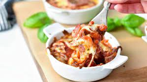

Cottage Cheese Pizza Bowl

Follow these steps to create your own homemade pizza bowl!
Ingredients
Before you begin you will need to make sure you have these ingredients:
- 1/2 cups of cottage cheese
- 1/4 cups of pizza sauce
- 1/2 teaspoon of garlic seasoning
- 1/2 teaspoon of italian seasoning
- 1/4 cups shredded mozzerella cheese
- pepperoni and your choice of toppings to add on top of the cheese
Steps
Now that you have the ingredients follow these steps to make this dish:
- Use a small baking pan to add the cottage cheese to
- Add tomato sauce or pizza sauce and both seasonings
- Mix thoroughly
- Add the mozzerella cheese on top and spread it out
- Place pepperoni and toppings on top of cheese
- Put the dish in an air fryer for 5 minutes or (if using a microwave safe
bowl) put in microwave 7 minutes
- Enjoy!
Return to Home